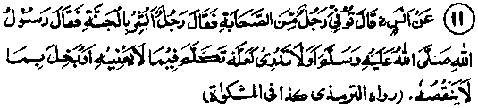
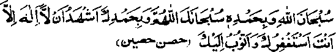
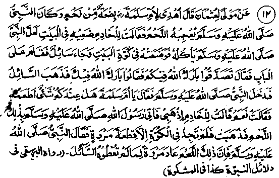
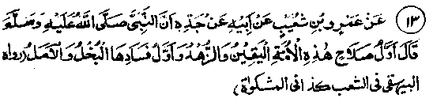
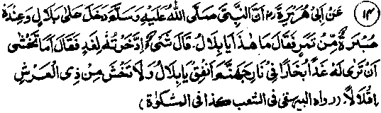

Chapter Two · Section (b): Ahadith regarding the evils of miserliness
4. Withholding goods for a price hike
10. Umar Radhiallaho anho has narrated that Rasulullah Sallallaho alaihe wasallam said, "Whoso brings provisions (grains etc.) from outside (for giving it to people cheap) receives (an increase in his) livelihood from Allah Ta'ala and the one who withholds such things is a cursed fellow".
Note: The theologian Abul Laith Samarqandi Rahmatullah alaihe has explained that some persons buy provisions from other cities so as to sell them to their people at a cheaper rate. For such people Allah Ta'ala provides an increase in their livelihood, because they do so for people’s benefits, who pray for their welfare. The person who withholds things, is one who buys things with the intention of hoarding and thus harming people by keeping back
provisions to increase their price, despite people’s urgent requirements. He is an accursed fellow because of his greed, miserliness and profiteering. Another Hadith says that Allah Ta'ala afflicts with poverty and leprosy, the person who holds back foodstuffs for forty days, and prevents sale (despite the people’s urgent need). It is clear from this that anyone who brings harm to the Muslims, and drives them into starvation, suffers a physical punishment like leprosy and also poverty. On the contrary, in case of a man who brings things from outside and sells them cheaply to people, Allah Ta'ala directly helps him by increased livelihood and other benefits. A Hadith puts it "How wicked is the man who withholds grain and feels unhappy when prices go down and is delighted when they are up! 'Another Hadith says that if a person hoards grain for forty days despite it’s being needed by the people and refuses to sell it but later gives away the whole lot as Sadaqah, it will not atone for his sin of hoarding.
It is said in one of the Ahadith that a man, from the previous Ummahs, passing by a sandy mound during a period of famine, wished (in his heart), if that mound were a mound of grain he would have fed the Bani Israeel to their satisfaction. Allah Ta'ala sent a revelation to the Nabi of those times to give him the good tidings of a reward, which had been recorded for him, equal to the charitable distribution of grain among the people upto the size and quantity of that mound. There is no paucity of blessings and rewards with Allah Ta'ala. He does not need to create storages or to multiply income; a simple sign by Him is enough to create provisions for the entire creation. Only actions and intentions of the people matter with Him. There is an abundance of blessings and rewards by the Great Creator for him Who shows love and kindness to His Creation.
Someone approached Abdullah Ibne Abbas Radhiallaho anho and requested him to advise him. He advised him to do six things: first, to have full faith in Allah Ta'ala about the things for which He Himself has taken responsibility (such as the livelihood); secondly, to fulfil the obligatory functions, which He has assigned, at their right time; thirdly, to keep the tongue busy refreshingly at all times with the remembrance of Allah Ta'ala! fourthly, not to obey Shaitan who is jealous of the whole creation of Allah Ta’ala; fifthly not to remain occupied in building up the worldly requirements of life, which will adversely affect the prospects in the Akhirah; sixthly to be a wellwisher of Muslims at all times.
The theologian Abul Laith Rahmatullah alaihe has said that eleven things are auspicious indications for man and eleven others are signs of misfortune for him. The auspicious ones are:(l) Not to covet things of this life, but only those that matter in the Hereafter. (2) Excessive prayers and recitation of the Qur’an. (3) Avoiding useless talk. (4) Vigilant care in performance of Salaat at the right time. (5) To keep away from things prohibited, however insignificant these may appear. (6) To remain in the company of the wise and pious. (7) To be humble and to abstain from arrogance. (8) To be kind and generous. (9)To show affection to Allah’s creation. (10) To be useful to people. (11) To remember death frequently. The signs of jnisfortune are: (1) Greed for collecting wealth. (2) Indulgence in worldly pleasures and passionate enjoyment. (3) Shameless and excessive talk. (4) To be lazy in performance of Salaat. (5) To eat prohibited and doubtful things and to associate with immoral people. (6) To be bad tempered (7) To be proud and arrogant. (8) To keep away from acts beneficial to people. (9) Not to have mercy on Muslims. (10) To be miserly. (11) To be forgetful of death. In the opinion of the learned author, the most fundamental thing is to remember death constantly. If this is kept up, the first eleven, by the grace of Allah Ta'ala, will automatically develop and will also provide a protection against the second list of eleven sources of misfortune. Rasulullah Sallallaho alaihe wasallam said, ‘Keep much in remembrance the cutter-off of the pleasures, i.e. death’. (Mishkaat)

Hadith 11
Anas Radhiallaho anho has said that one of the Sahabah Radhiallaho anhum died and, from among the gathering,someone said that the deceased was a Jan-nati. On that, Rasulullah Sallallaho alaihe wasallam said, "How do you say that? He might have indulged in idle talk or shown miserliness over a thing which was of little value to him."
Note: The above mentioned shortcomings may cause a hindrance to one’s entry into Jannah. Generally, engaging oneself in useless matters and idle gossip is a common habit and a pastime in the present-day society. The great affection and compassion of Rasulullah Sallallaho alaihe wasallam for the Ummah deserves our highest appreciation in that he has given a solution for every difficulty and, in the short period of twenty three years of his ‘Risaalat’, he has suggested answers to all the problems which may arise at any time throughout the life of man in this world. He has told us that the atonement for any type of sinful behaviour in gatherings is to invoke Allah in a Du'aa, before ending the sitting:

"Glorified be Allah! All Praise be to Him! Glorified art Thou, O my Allah, with Thy Praise; I bear witness that there is none to be worshipped except Thee; I beg forgiveness of Thee, and turn to Thee in repentance!"
The other thing in the above Hadith is the condemnation of miserliness which one may show in refusing to give something that may cause little loss to oneself. We may consider many actions as trifling/but, with Allah Ta'ala, they may rank high in earning reward or punishment. There is a Hadith in Bukhari that a person may say something in praise of Allah Ta'ala, which may seem to him a small thing but it raises him to higher ranks, while a word, which Allah Ta'ala may dislike, may throw him in Jahannam, deep as the East is distant from the West

Hadith 12
Ummul Mo’mineen Umme Salmah Radhiallaho anha was given a piece of roast meat as a gift by someone. As Rasulullah Sallallaho alaihe wasallam was very fond of meat, she told the housemaid to keep it away safely for Rasulullah Sallallaho alaihe wasallam as he might like to eat it sometime. The maid put it in a shelf but, after a little while, a beggar came to the door and begged for something for the sake of Allah. He was given the answer, 'May Allah bless you’, (meaning there was nothing available in the house). The beggar went away and Rasulullah Sallallaho alaihe wasallam came in after he was gone, and asked Umme Salmah if there was anything for him to eat. She ordered the housemaid to bring the piece of meat for Rasulullah to eat. When she went in, she did not find the meat in the shelf, but saw a white stone in its place. (After hearing the whole story) Rasulullah Sallallaho alaihe wasallam said, "Since you did not give the piece of meat to the beggar, it has been turned into a piece of stone".
Note: How very instructive! The generosity of the sacred wives of Rasulullah is not open to question; the piece of meat was retained for a legitimate need and that, too, for Rasulullah Sallallaho alaihe wasallam, but the result was astonishing! It was a special favour and bounty of Allah Ta'ala that He showed to the household of Rasulullah Sallallaho alaihe wasallam, the ultimate effect of denying a piece of meat to a beggar, it was meant to indicate that anyone who eats something, after refusing it to a needy person, is like one eating a piece of stone and he shall not get any benefits out of it. The truth is that we eat many delightful things, by the blessing of Allah Ta'ala, but none of them seems to benefit us, as desired, and we complain that the good things have lost their real effect. In fact, it is the ill-effect of our own evil intentions that marks their true quality.

Hadith 13
The well-being of this Ummah, in early times, was a consequence of their firm faith (in Allah Ta'ala) and an indifference towards worldly attractions; its decadence and corruption will begin with miserliness and with entertaining inordinate hopes regarding the distant future.
Note: In reality, miserliness comes from entertaining high hopes and worldly ambitions. Man builds up longterm plans and then begins to gather resources for accompl’shing them. If he were to keep death in remembrance, and realise that he may not have many days to live, he will not plan for the distant future, nor will the need to gather resources arise in his mind.

Hadith 14
Rasulullah Sallallaho alaihe wasallam once visited Bilal Radhiallaho anho and found a heap of dates lying in front of him; when he asked Bilal as to what it was for, Bilal replied that he had gathered it for future use. Rasulullah Sallallaho alaihe wasallam said, 'O, Bilal, are you not afraid of the Day of Judgement when, due to this hoarding up, you may have to see the smoke of Jahannam. Bilal, spend it and do not have fear of any shortage from the Owner of the Arsh (Great Divine Throne)".
Note: Every person has a status and a position. The Shariah makes allowance for the weak and feeble in frith,like us, to store something for future needs, but for the revered personality of Bilal Radhiallaho anho, whose frith and belief in Allah Ta'ala was of high degree, it was nothin keeping with his great Imaan,to have fears about any shortage for him in the Divine store. Seeing the smoke of Jahannam does not necessarily mean entering Jahannam itself, but it does mean some reduction in status of Bilal Radhiallaho anho. Even if that may not happen, there is likely to be a longer period of reckoning. In some Ahadith, Rasulullah Sallallaho alaihe wasallam has mentioned punishment in Jahannam due to hoarding up of a meagre sum of one or two Dinaars. (See Chapter 6, Hadith No. 2, which is to follow). The reckoning will be for every person, the more the wealth, the longer the period of reckoning.
Rasulullah Sallallaho alaihe wasallam has said that he, while standing at the gateway to Jannah, saw that the majority of the people entering Jannah were the poor, whereas those who had plenty were being held back (for reckoning), while those who were condemned to Jahannam had been thrown into it. Visiting the gateway of Jahannam, he saw most of those who entered it were the women-folk, the reason for which has been mentioned in another Hadith. Abu Saeed Radhiallaho anho has said that Rasulullah,on the Day of Eid, visited the Eidgah and passing by a gathering of women, addressed them,saying that they should give plenty as Sadaqaat as he had seen mostly women in Jahannam. When the women asked him the reason, he replied that they frequently indulged in cursing and were ungrateful towards their husbands. Even in the case of their own children, whom they hold very dear, they curse them for small errors by saying, "May death overtake you! May you get buried and so on". The ingratitude towards the husband is frequently witnessed he may do much to pamper her, yet she is never satisfied; she becomes unhappy at the slightest regard and favour shown by him to his own kitch and kin, including his parents.